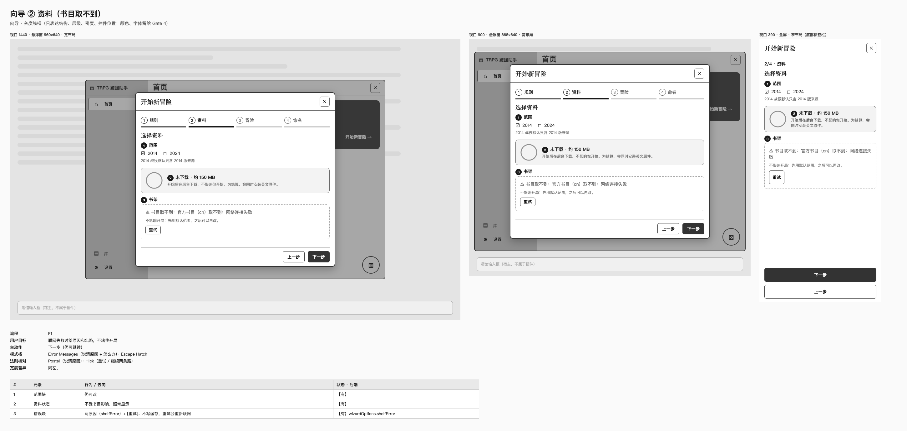
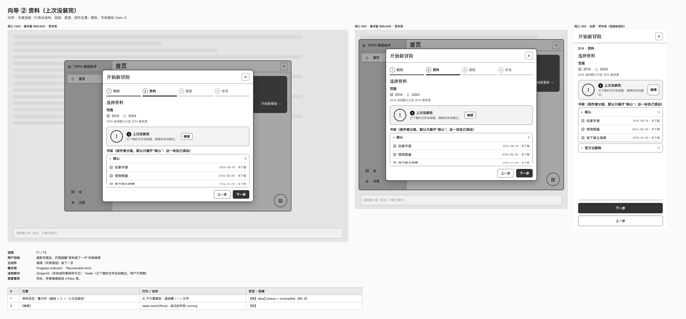
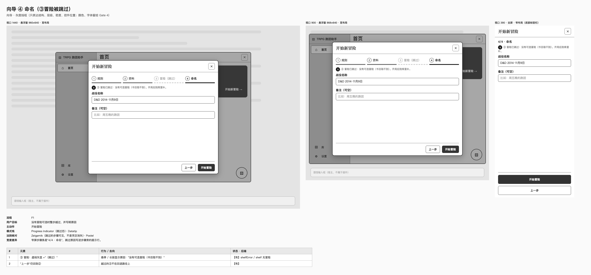
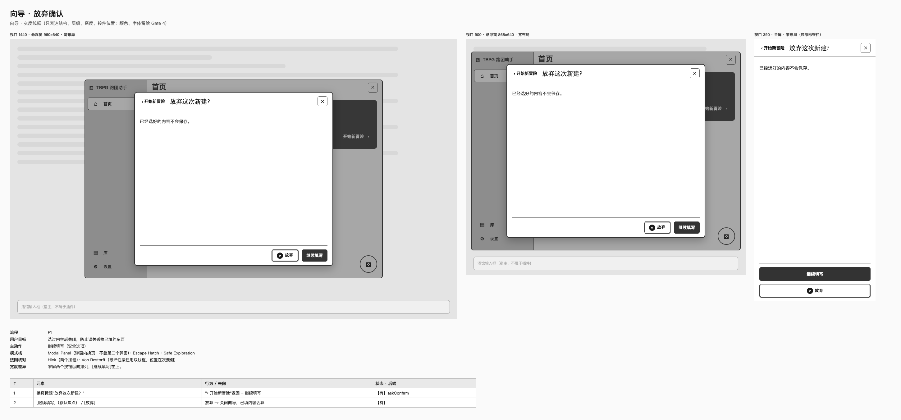

P4 灰度线框（Gate 3）
共 29 屏，每屏三种宽度：1440（悬浮窗 960×640）、900（悬浮窗 868×640）、390（全屏，底部标签栏）；外壳和抽屉另加 600 宽的"中"布局。点卡片看大图和标注。类名沿用插件现有界面，可直接复制 HTML 进 Vue 组件；说明见 README.md。
外壳与首页
 首页 · 没有打开聊天F0
首页 · 没有打开聊天F0 首页 · 只读（另一窗口占用）F0
首页 · 只读（另一窗口占用）F0 首页 · 有战役（有未保存改动）F0 / F3
首页 · 有战役（有未保存改动）F0 / F3 首页 · 刚开局（资料在后台下载）F1 完成 → F2
首页 · 刚开局（资料在后台下载）F1 完成 → F2向导
 向导 ① 规则F1
向导 ① 规则F1 向导 ② 资料（还没下载）F1
向导 ② 资料（还没下载）F1 向导 ② 资料（读取书目中）F1
向导 ② 资料（读取书目中）F1
向导 ② 资料（书目取不到）F1
向导 ② 资料（上次没装完）F1 / F2 向导 ③ 冒险F1
向导 ③ 冒险F1 向导 ④ 命名F1
向导 ④ 命名F1
向导 ④ 命名（③冒险被跳过）F1 向导 ④ 命名（出错）F1
向导 ④ 命名（出错）F1
向导 · 放弃确认F1存档抽屉
 存档抽屉（有战役）F3 / F4
存档抽屉（有战役）F3 / F4 存档抽屉（还没有战役：读取已有存档）F4
存档抽屉（还没有战役：读取已有存档）F4 读取确认（合并成一页，示意所有块）F4
读取确认（合并成一页，示意所有块）F4 读取确认（不能读取：规则没装）F4
读取确认（不能读取：规则没装）F4 删除确认（有子分支）F5
删除确认（有子分支）F5 最近删除与彻底删除F5
最近删除与彻底删除F5 导出F6
导出F6 导入预览与结果F6
导入预览与结果F6 进度环：五种状态
进度环：五种状态 点库标签：资料安装详情（下载中）
点库标签：资料安装详情（下载中） 点库标签：下载失败 / 上次没装完
点库标签：下载失败 / 上次没装完 设置页
设置页 提示条：位置与三种
提示条：位置与三种